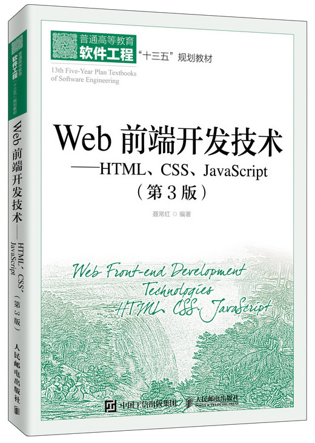

首页 > 书籍下载
《Web前端开发技术——HTML、CSS、JavaScript（第3版）》PDF下载（高清完整版）
|  | 作者：聂常红 |
| 出版时间：2020年04月01日 | |
| 出版社：人民邮电出版社 | |
| ISBN：9787115495297 | |
| 总页数：370 |
这是一本 Web 前端开发基础书，本书介绍了 Web 开发标准的三个主要组成部分：HTML、CSS 和 JavaScript，内容全面，由浅入深，非常适合大中专院校及培训学校计算机相关专业用作教材。
这里提供的是《Web前端开发技术——HTML、CSS、JavaScript（第3版）》的高清 PDF 下载，内容完整，附带目录标签。
这本书和其它同类型的相关书籍相比，主要有以下几个特点：
- 系统性：按照电子基础知识与开发方法，全面系统地把理论与实践相结合；
- 实用性：第个章节都以案例做引导，并设置了学习目标、本章小结、习题等内容，更加全面地把知识贯穿于一体；
- 新颖性：作者结合十多年的教学经验，将重点和难点录制成微课视频，以提升读者的学习效率。
《Web前端开发技术》自出版以来，受到许多读者的好评，比如：
内容丰富，适合自学，第3版又增加许多新的技术和知识点，比较全面。
书籍目录
- 第1HTML基础
- 1.1 基本概念
- 1.2 HTML发展历程
- 1.3 HTML文件
- 第2章 常用文本标签和文档结构标签
- 2.1 常用文本标签
- 2.2 HTML5文档结构标签
- 第3章 在网页中插入多媒体内容
- 3.1 在网页中插入图片
- 3.2 使用嵌入Flash*画
- 3.3 使用嵌入多媒体内容
- 3.4 使用
- 3.5 使用
- 第4章 列表、DIV标签和元素类型
- 4.1 使用列表标签创建列表
- 4.2 标签
- 4.3 元素类型
- 第5章 在网页中创建超链接
- 5.1 使用标签创建超链接
- 5.2 基准URL标签
- 5.3 超链接的类型
- 5.4 超链接与浮动框架
- 第6章 在网页中使用表格
- 6.1 表格概述
- 6.2 表格标签
- 6.3 表格的综合示例
- 第7章 在网页中创建表单
- 7.1 表单概述
- 7.2 标签
- 7.3 input元素
- 7.4 选择列表元素
- 7.5 文本域元素
- 7.6 HTML5表单新增属性
- 7.7 HTML5表单新增的input元素类型
- 7.8 提交按钮新增取消验检属性
- 7.9 表单综合示例
- 第8章 CSS的定义及应用
- 8.1 CSS概述
- 8.2 定义CSS的基本语法
- 8.3 CSS基本选择器
- 8.4 CSS复合选择器
- 8.5 在HTML文档中应用CSS的常用方式
- 8.6 CSS的冲突与解决
- 第9章 CSS常用属性
- 9.1 文本属性
- 9.2 字体属性
- 9.3 背景属性
- 9.4 display属性
- 9.5 列表属性
- 9.5 表格属性
- 第10章 盒子模型
- 10.1 盒子模型的组成
- 10.2 盒子边框设置
- 10.3 盒子内边距设置
- 10.4 盒子外边距设置
- 10.5 盒子内容大小设置
- 第11章 网页元素的CSS排版
- 11.1 标准流排版
- 11.2 浮动排版
- 11.3 定位排版
- 第12章 网页常见布局版式
- 12.1 上中下一栏版式
- 12.2 左右两栏版式
- 12.3 左右两栏+页眉+页脚版式
- 12.4 左右宽度固定中间自适应的左中右三栏版式
- 12.5 左中右三栏+页眉+页脚版式
- 12.6 DIV+CSS布局与表格布局的比较
- 第13章 基础
- 13.1 概述
- 13.2 代码的调试方法
- 13.3 标识符、关键字和保留字
- 13.4 直接量
- 13.5 变量
- 13.6 数据类型
- 13.7 表达式和运算符
- 13.7 语句
- 13.8 在网页中嵌入代码
书籍下载
一键登录，免费下载完整版 PDF，文件名称：《Web前端开发技术——HTML、CSS、JavaScript（第3版）》.pdf